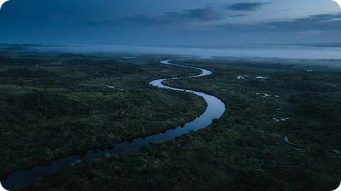

Основи фінансової грамотності
Відео стороннього автора. Перегляд відкриває плеєр YouTube.
Потік монет — інструмент моделювання фінансових цілей. Наша мета — зробити шлях до накопичень зрозумілим: перетворити чотири числа на послідовний план, який можна переосмислювати разом зі зміною обставин.

Коротке відео про особисті фінанси та офіційні курси валют допоможуть оцінювати цілі в ширшому контексті. Курси мають довідковий характер і не впливають на розрахунок симулятора.
Відео стороннього автора. Перегляд відкриває плеєр YouTube.
Львівська політехніка, Львів. «Потік монет» працює онлайн і не має офісу для прийому клієнтів.